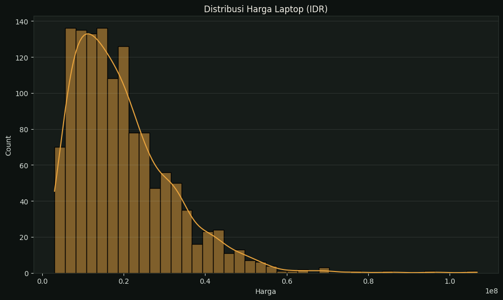
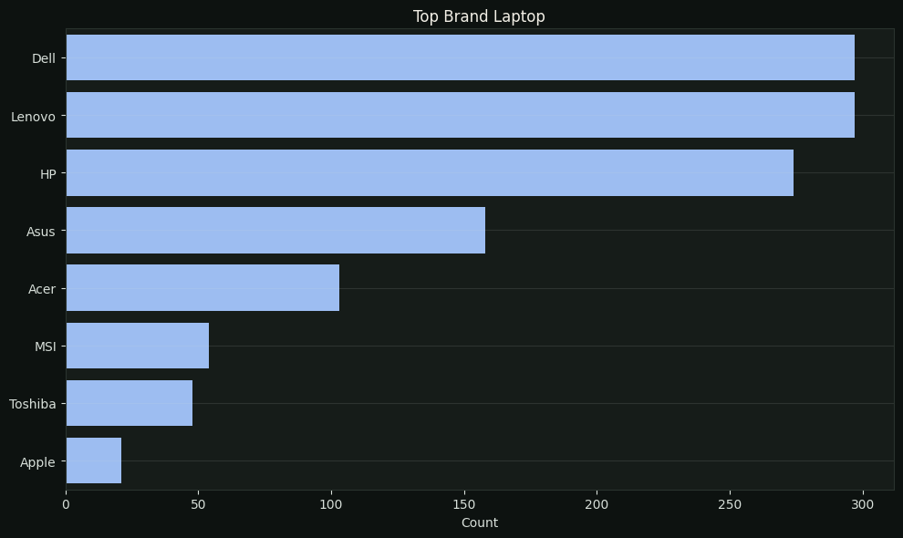
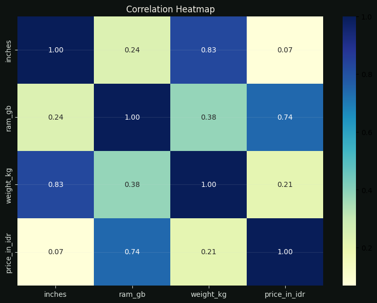
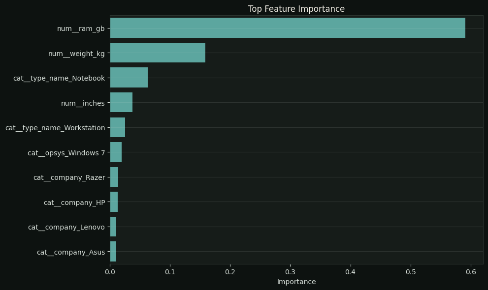

Understanding Laptop Pricing Through Data.
This project demonstrates how structured product data can move from exploration to prediction by transforming raw laptop specifications into pricing insights and a regression-based predictive model. The workflow covers data cleaning, feature engineering, exploratory analysis, visualization, and regression modeling to understand which characteristics matter most when estimating laptop prices.
From Raw Specifications to Price Prediction
The analysis connects data preparation, visual exploration, feature importance, and model evaluation into one practical predictive workflow.




Key Findings
- Data preparation removed duplicate records and transformed key hardware attributes into model-ready features.
- RAM and weight were engineered into usable numerical signals, creating a stable benchmark for prediction.
- The price distribution is right-skewed, while tree-based modeling provides a practical baseline for nonlinear relationships.
Model & Methodology
A RandomForestRegressor benchmark uses vendor, device type, operating system, screen size, RAM, and weight to estimate laptop prices. The model provides a practical baseline while feature importance helps explain which variables contribute most to the prediction.